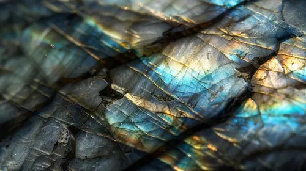

La Labradorite est une pierre aux reflets exceptionnels, reconnue pour sa capacité à nous aider à maintenir une connexion profonde avec le monde spirituel. Elle est le lien subtil qui nous relie à nos guides, à notre ange gardien, et à toutes les entités bienveillantes de l'autre côté du voile. Son éclat irisé, qui semble changer sous différents angles, reflète la fluidité et la mystique des énergies invisibles. Elle nous invite à ouvrir notre cœur et notre esprit aux messages divins, à nous ancrer dans la sagesse universelle et à rester réceptifs aux signes et aux intuitions qui guident notre chemin. C'est une pierre idéale pour les moments de méditation ou pour quiconque cherche à approfondir sa connexion spirituelle. La Labradorite nous protège également des énergies négatives, tout en amplifiant nos capacités intuitives et en éveillant notre conscience supérieure. Laissez-vous envelopper par sa magie et laissez la Labradorite vous aider à suivre la voie de votre lumière intérieure.
Nos prochaines conférences, formations vous tentes?
Nous publions régulièrement sur les résaux sociaux